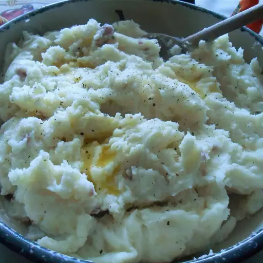

Mashed Potatoes

Description
These mashed potatoes are too fattening to have on a regular basis. But
they are perfect for the holidays. Everyone who eats them will wonder
what's in them that makes them so rich.
Ingredients
- 5 pounds red potatoes, peeled and quartered
- 1 cup heavy cream
- 1/2 cup butter
- salt and pepper to taste
Steps
- Place potatoes in a large pot with enough water to cover.
- Bring to a boil, and cook until fork tender, about 20 minutes.
- Drain, add butter, and mash using a potato masher, ricer or mixer.
- Gradually beat in the heavy cream.
- Serve hot, and Enjoy!